Die Holzbläser – Flöte, Klarinette, Oboe und Fagott – Lesespurgeschichte mit Rätselaufgaben (Klasse 5)

Glocken – vom Guss bis zum Geläut – Lesespurgeschichte mit Rätselaufgaben (Klasse 5)

Das Weihnachtsoratorium – Chor, Arie und Rezitativ – Lesespurgeschichte mit Rätselaufgaben (Klasse 7)
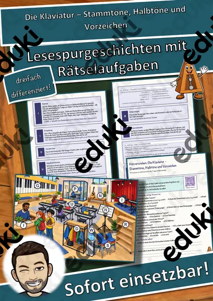
Die Klaviatur – Stammtöne, Halbtöne und Vorzeichen – Lesespurgeschichte mit Rätselaufgaben (Klasse 6)

Lieder begleiten – mit Akkorden, Bass und Rhythmus – Lesespurgeschichte mit Rätselaufgaben (Klasse 7)

Improvisation – Musik aus dem Moment – Lesespurgeschichte mit Rätselaufgaben (Klasse 8)

Musik der Renaissance – Notendruck, Madrigal und Hoftanz – Lesespurgeschichte mit Rätselaufgaben (Klasse 7)
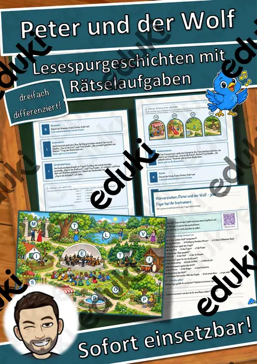
Peter und der Wolf – jede Figur hat ihr Instrument – Lesespurgeschichte mit Rätselaufgaben (Klasse 3)

Johann Strauss und der Walzer – Musik zum Tanzen – Lesespurgeschichte mit Rätselaufgaben (Klasse 7)

Die Band – vom Proberaum auf die Bühne – Lesespurgeschichte mit Rätselaufgaben (Klasse 7)
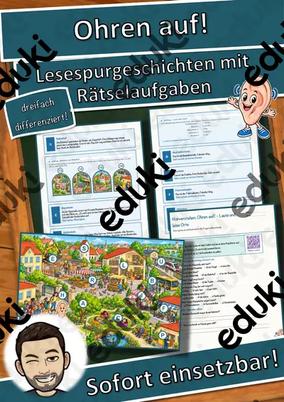
Ohren auf! – Laute und leise Orte – Lesespurgeschichte mit Rätselaufgaben (Klasse 1)
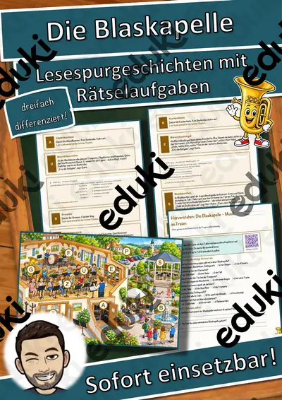
Die Blaskapelle – Musik im Freien – Lesespurgeschichte mit Rätselaufgaben (Klasse 3)
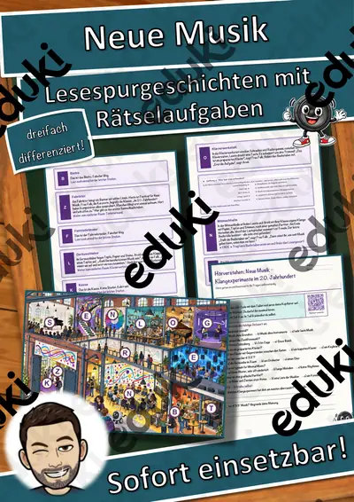
Neue Musik – Klangexperimente im 20. Jahrhundert – Lesespurgeschichte mit Rätselaufgaben (Klasse 10)
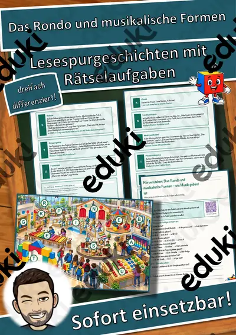
Das Rondo und musikalische Formen – wie Musik gebaut ist – Lesespurgeschichte mit Rätselaufgaben (Klasse 6)
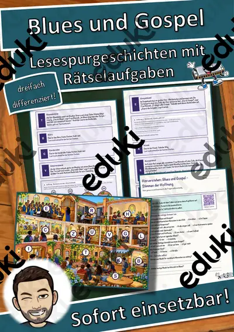
Blues und Gospel – Stimmen der Hoffnung – Lesespurgeschichte mit Rätselaufgaben (Klasse 9)
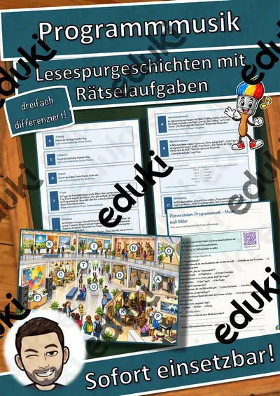
Programmmusik – Musik malt Bilder – Lesespurgeschichte mit Rätselaufgaben (Klasse 6)

Popmusik – wie ein Hit entsteht – Lesespurgeschichte mit Rätselaufgaben (Klasse 8)
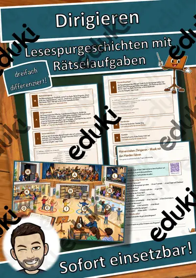
Dirigieren – Musik mit den Händen führen – Lesespurgeschichte mit Rätselaufgaben (Klasse 6)
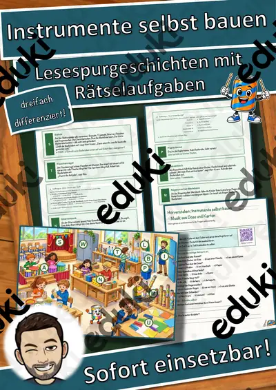
Instrumente selbst bauen – Musik aus Dose und Karton – Lesespurgeschichte mit Rätselaufgaben (Klasse 1)
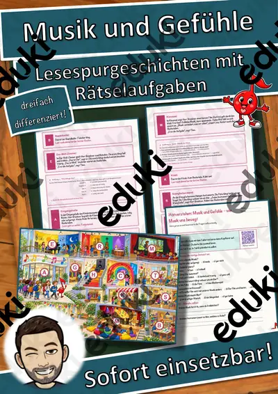
Musik und Gefühle – wie Musik uns bewegt – Lesespurgeschichte mit Rätselaufgaben (Klasse 3)
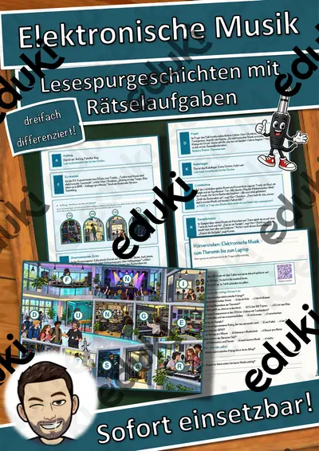
Elektronische Musik – vom Theremin bis zum Laptop – Lesespurgeschichte mit Rätselaufgaben (Klasse 10)
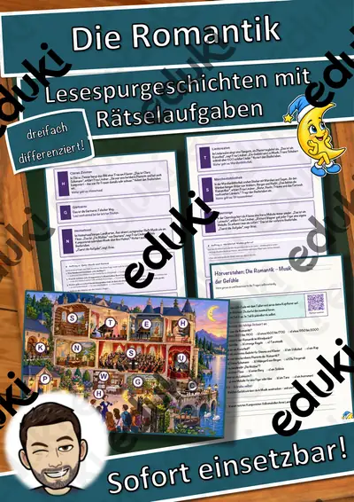
Die Romantik – Musik der Gefühle – Lesespurgeschichte mit Rätselaufgaben (Klasse 9)

Die Wiener Klassik – Haydn, Mozart, Beethoven – Lesespurgeschichte mit Rätselaufgaben (Klasse 8)

Musik im Mittelalter – Mönche, Minnesänger und Spielleute – Lesespurgeschichte mit Rätselaufgaben (Klasse 7)
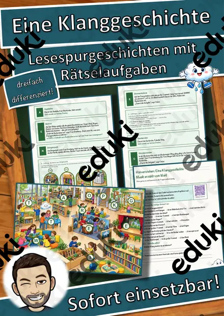
Eine Klanggeschichte – Musik erzählt vom Wald – Lesespurgeschichte mit Rätselaufgaben (Klasse 1)
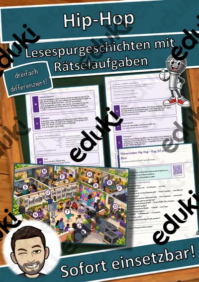
Hip-Hop – Rap, DJ und Beat – Lesespurgeschichte mit Rätselaufgaben (Klasse 9)
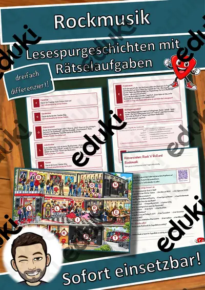
Rock ’n’ Roll und Rockmusik – Lesespurgeschichte mit Rätselaufgaben (Klasse 9)
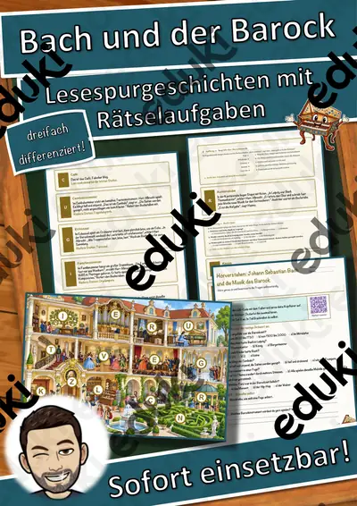
Johann Sebastian Bach und die Musik des Barock – Lesespurgeschichte mit Rätselaufgaben (Klasse 7)
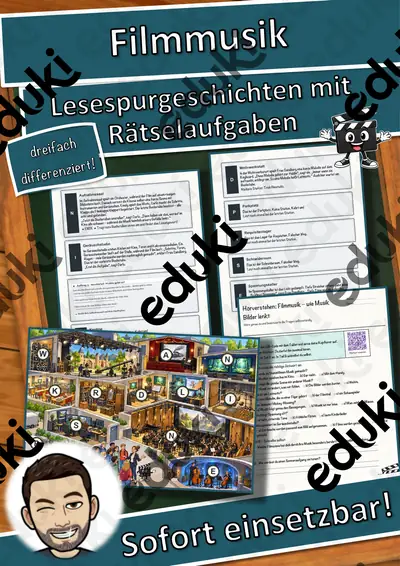
Filmmusik – wie Musik Bilder lenkt – Lesespurgeschichte mit Rätselaufgaben (Klasse 9)
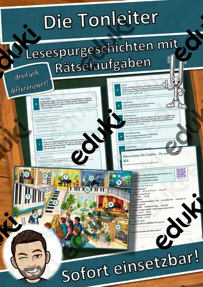
Die Tonleiter – Dur und Moll – Lesespurgeschichte mit Rätselaufgaben (Klasse 6)
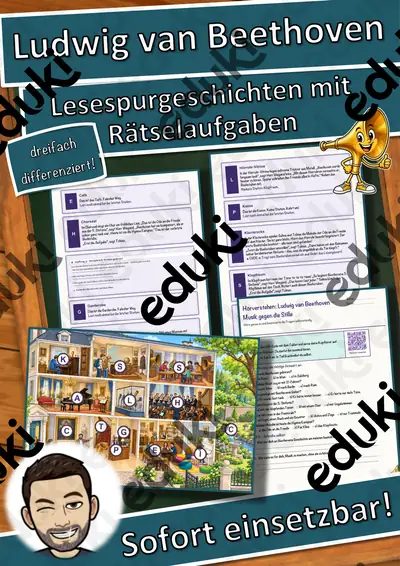
Ludwig van Beethoven – Musik gegen die Stille – Lesespurgeschichte mit Rätselaufgaben (Klasse 6)
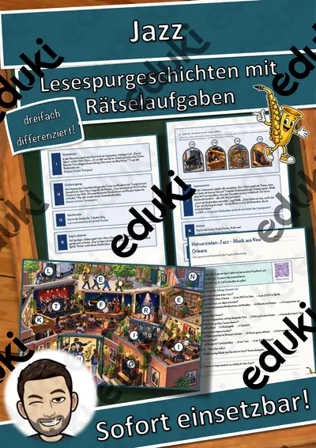
Jazz – Musik aus New Orleans – Lesespurgeschichte mit Rätselaufgaben (Klasse 9)
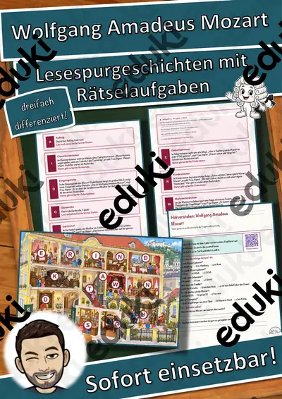
Wolfgang Amadeus Mozart – Lesespurgeschichte mit Rätselaufgaben (Klasse 3)
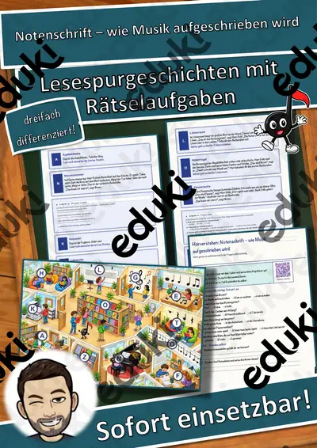
Notenschrift – wie Musik aufgeschrieben wird – Lesespurgeschichte mit Rätselaufgaben (Klasse 3)
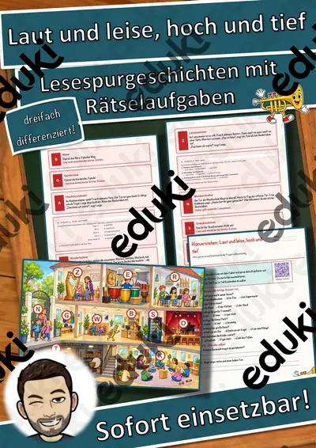
Laut und leise, hoch und tief – Lesespurgeschichte mit Rätselaufgaben (Klasse 1)

Der Plattenspieler – Lesespurgeschichte mit Rätselaufgaben (Klasse 8)

Der Konzertsaal – Lesespurgeschichte mit Rätselaufgaben (Klasse 8)

Der Dudelsack – Lesespurgeschichte mit Rätselaufgaben (Klasse 8)

Das Cajón – Lesespurgeschichte mit Rätselaufgaben (Klasse 8)

Das Vibraphon – Lesespurgeschichte mit Rätselaufgaben (Klasse 8)

Das Xylophon – Lesespurgeschichte mit Rätselaufgaben (Klasse 8)

Die Posaune – Lesespurgeschichte mit Rätselaufgaben (Klasse 8)

Das Akkordeon – Lesespurgeschichte mit Rätselaufgaben (Klasse 8)

Die Harfe – Lesespurgeschichte mit Rätselaufgaben (Klasse 8)
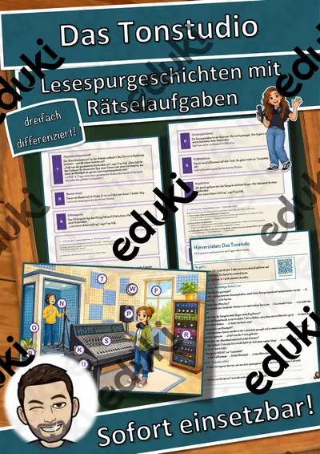
Das Tonstudio – Lesespurgeschichte mit Rätselaufgaben (Klasse 9)

Die Geige – Lesespurgeschichte mit Rätselaufgaben (Klasse 8)

Die Pauke – Lesespurgeschichte mit Rätselaufgaben (Klasse 8)

Die Trompete – Lesespurgeschichte mit Rätselaufgaben (Klasse 8)

Die Gitarre – Lesespurgeschichte mit Rätselaufgaben (Klasse 8)

Das Schlagzeug – Lesespurgeschichte mit Rätselaufgaben (Klasse 8)

Das Klavier – Lesespurgeschichte mit Rätselaufgaben (Klasse 8)

Die Kirchenorgel – Lesespurgeschichte mit Rätselaufgaben (Klasse 8)

Das Sinfonieorchester – Lesespurgeschichte mit Rätselaufgaben (Klasse 8)
Keine Materialien gefunden – versuch einen anderen Suchbegriff oder Filter.